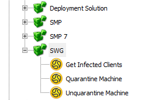
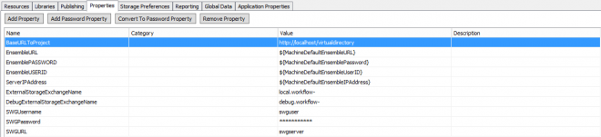

Symantec Secure Web Gateway: ProxySG & ASG

Advanced proxy architecture for complete enterprise network security
ProxySG and Advanced Secure Gateway (ASG) solutions are an advanced set of technologies working to protect organizations across the web, social media, applications and mobile networks. The Secure Web Gateways are available as high performance on-premises appliances or virtual solutions. Any combination of these can be used in a centrally managed hybrid deployment.
https://www.symantec.com/products/secure-web-gateway-proxy-sg-and-asg
Add the "Symantec.Components.SWG.dll" to your Project.
[Install Drive]:\Program Files\Symantec\Workflow\Shared\components\Symantec.Components.SWG.dll
There are a couple of Components you can use within your Project.
Components

Symantec
SWG
- Get Infected Clients
- Quarantine Machine
- Unquarantine Machine
There are a couple of Properties that get added to your Project when your drag on a Component, fill in these with your Credentials for use throughout.
Properties

| Name | Value |
|---|---|
| SWGUsername | |
| SWGPassword | |
| SWGURL | swgserver |
APIs
Infected Clients
https://{0}/ciu/infectedHostReport.php
Quarantine
https://{0}/ciu/remoteQuarantine.php
Unquarantine
https://{0}/ciu/remoteUnquarantine.php